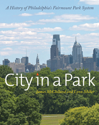

How Philadelphia’s early efforts at conservation led to the country’s greatest park system
How Philadelphia’s early efforts at conservation led to the country’s greatest park system


 How Philadelphia’s early efforts at conservation led to the country’s greatest park system
How Philadelphia’s early efforts at conservation led to the country’s greatest park system

|  |
City in a ParkA History of Philadelphia's Fairmount Park SystemJames McClelland and Lynn Millercloth EAN: 978-1-43991-208-9 (ISBN: 1-4399-1208-4) |
"In our gridded city of brick and stone, we take solace from the open spaces—the burst of azaleas along the Schuylkill River, the water fountain in Rittenhouse Square, the quiet repose of Laurel Hill, the ghosts of the Centennial Exhibition. Encyclopedic in its reach and thoughtful in its composition, City in a Park unfolds the history of Philadelphia’s expansive, sometimes surprising municipal park against the backdrop of recent and ongoing grand renewals. It reminds us of the treasures we have in our shared back, front, and side yards."
—Beth Kephart, Flow: The Life and Times of Philadelphia’s Schuylkill River and Love: A Philadelphia Affair
Fairmount Park is the municipal park system of Philadelphia, Pennsylvania. It consists of more than one hundred parks, squares, and green spaces totaling approximately 11,000 acres, and is one of the largest landscaped urban park systems in the world. In City in a Park, James McClelland and Lynn Miller provide an affectionate and comprehensive history of this 200-year-old network of parks.
Originated in the nineteenth century as a civic effort to provide a clean water supply to Philadelphia, Fairmount Park also furnished public pleasure grounds for boat races and hiking, among other activities. Millions today travel to the city to view its eighteenth-century villas, attend boat races on the Schuylkill River, hike the Wissahickon Creek, visit the Philadelphia Zoo, hear concerts in summer, stroll the city’s historic squares and the Benjamin Franklin Parkway, and enjoy its enormous collection of public art. Green initiatives flower today; Philadelphia lives amidst its parks.
Filled with nearly 150 gorgeous full-color photographs, City in a Park chronicles the continuing efforts to create a twenty-first century version of what founder William Penn desired: a “greene countrie town.”
Excerpt available at www.temple.edu/tempress
"A comprehensive study of the Philadelphia park system, this book will delight readers who approach their understanding and appreciation of the city’s parks from multiple vantage points. More than just a vivid and richly illustrated tour through Philadelphia’s parks and their historic structures, public art, and institutions, City in a Park deftly covers more than two hundred years of park history, clearly and engagingly explaining the origins, growth, and governance within the city’s prevailing and evolving historical and economic context. City in a Park is both an excellent guidebook and a captivating read. Armed with this rich lode of information, readers will find a visit to the park all the more stimulating"
—Bob Thomas, Campbell Thomas & Co. Architects
"Whether delving into two centuries of the park system’s origins and history, marveling at the historical architecture of the houses and mansions along the Schuylkill or detailing the many public-art installations that can be found among the many acres, McClelland and Miller deliver this wealth of information with academic precision while keeping it compelling and entertaining."
—Philadelphia Gay News
"[M]ore than just a coffee-table book--it's a guide to the hidden treasures of one of the largest landscaped urban parks in the world.... It's the perfect gift for history buffs--or keep it for yourself and experience the park in a whole new way."
—Philadelphia Style Magazine
"A substantial, richly illustrated book highlighting the significance of Fairmount Park and its place in the larger urban parks movement has been long overdue. City in a Park has finally arrived to fill that void. Augmented with 150 photographs, McClelland and Miller's text is crystal clear and comprehensive, covering the story of America's largest urban park, from its origin at the founding of Philadelphia in 1682 to the expansive green jewel it has become today.... If you have a shelf of books about Philadelphia, City in a Park needs to be on it."
—Pennsylvania Heritage
"[U]ntil James McClelland and Lynn Miller wrote a new book, City in a Park, there has been no comprehensive accounting of [Fairmount Park's] creation, maintenance (or not),and its future. The authors tell the tale in an engaging fashion, though each chapter focuses on a particular aspect of the system and can easily be read in isolation from the larger narrative.... McClelland and Miller's book will serve as the perfect guide to this vast expanse of greenery and offers an alternative prescription for public parks than those traditionally hailed 19th century classics."
—Planning
"Some of the book's most riveting chapters document the myriad — and at one point, the authors call it overwhelming — examples of art in parks and other public places. Learn about the eclectic variety of statues on Kelly Drive, monuments at Laurel Hill Cemetery, the 1876 sculptures at Memorial Hall (now the Please Touch Museum), the Rodin Museum, the bronze Charles Dickens/Little Nell in Clark Park, the Claes Oldenberg "Clothespin" at Penn Center, and the colossally bizarre Catholic Total Abstinence Union Fountain close to the Mann Center. The nearly 150 photos are one of the book's strengths.... pretty impressive."
—Ticket
"Fairmount Park was on its way to becoming, at nearly 11,000 acres, one of the largest urban park systems in the world. It's quite a story, one still ongoing, and it's all here, accompanied by 150 really great photos. Now you can know all about those statues you maybe only drive by. This should be on every coffee table in Philly."
—Philadelphia Inquirer
"This is a chatty and lavishly illustrated volume that will enhance anyone’s coffee table. In chapters that combine a historic overview with focused accounts of such topics as recreational activities, transportation, historic houses, and public art, the authors offer helpful information about Philadelphia’s incomparable park system.... The photographs are of high quality and offer a lively tour of sites and structures within the park system."
—Pennsylvania Magazine of History and Biography
James McClelland is a freelance writer whose work focuses on the arts. He is Executive Director Emeritus of the Philadelphia Art Alliance and the author of The Martinos: A Legacy of Art, Fountains of Philadelphia: A Guide, and more than two hundred articles published in national magazines.
Lynn Miller is Professor Emeritus of Political Science, Temple University. He is the author of, among others, Global Order: Values and Power in International Politics and Crossing the Line (a novel), and the co-author (with Annette H. Emgarth) of French Philadelphia: The French Cultural & Historical Presence in the Delaware Valley.
Philadelphia Region
General Interest
History
© 2017 Temple University. All Rights Reserved. This page: http://www.temple.edu/tempress/titles/2348_reg.html.